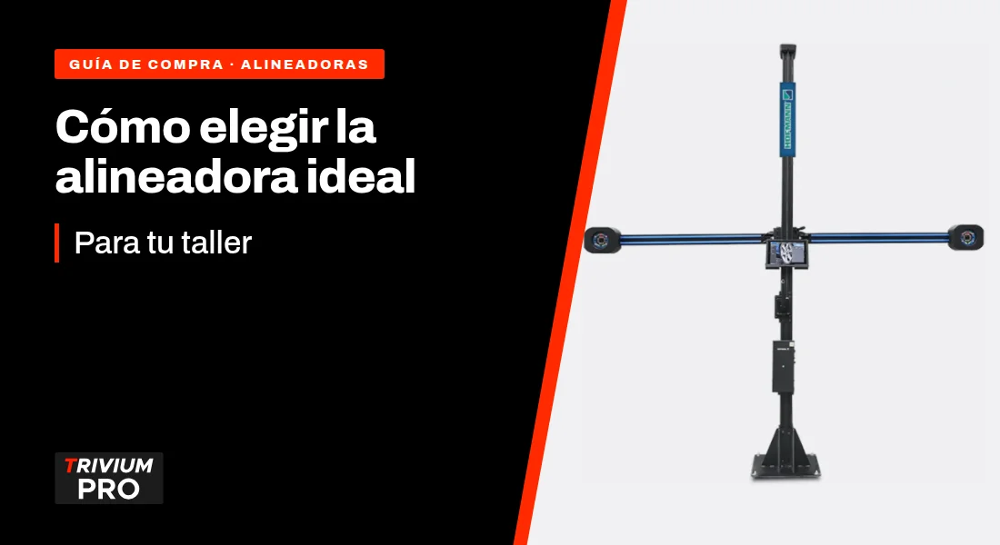

La elección de una alineadora puede marcar la diferencia entre un servicio eficiente y complicaciones operativas constantes. Esta guía te brinda los aspectos fundamentales a considerar para realizar una inversión acertada.
Consideraciones Iniciales
Antes de realizar la inversión, es fundamental evaluar varios aspectos clave:
1. Espacio Disponible en el Taller
El espacio es un factor crítico que determina qué tipo de alineadora puede instalarse. Hay que considerar:
- Área de trabajo necesaria alrededor del elevador
- Espacio para maniobras de ingreso y egreso
- Altura del techo (especialmente relevante para vehículos altos)
2. Volumen de Trabajo
Es necesario realizar un análisis realista:
- Cantidad de alineaciones diarias actuales
- Proyección de crecimiento a mediano plazo
- Capacidad operativa del taller
3. Perfil de Vehículos
El tipo de vehículos que se atienden determina las características necesarias:
- Vehículos particulares: sistemas estándar pueden ser suficientes
- Camionetas y utilitarios: requieren equipos más robustos
- Flotas: necesitan sistemas con gestión de datos
Tecnología: Comparativa 2D vs 3D
Alineadoras 2D (Convencionales)
- Ventajas:
- Menor inversión inicial
- Operación más simple
- Ideales para comenzar
- Desventajas:
- Mayor tiempo de operación
- Precisión más limitada
- Requieren mayor espacio
Alineadoras 3D (Nueva Generación)
- Ventajas:
- Alta precisión
- Mayor eficiencia operativa
- Optimización del espacio
- Mediciones en tiempo real
- Desventajas:
- Mayor inversión inicial
- Requieren capacitación específica
Análisis de Inversión
El rango de inversión varía según el tipo de equipo:
- Sistema básico 2D: Desde USD 5.000
- Sistema 3D básico: Desde USD 10.000
- Equipos premium: USD 20.000 o superior
Aspectos adicionales a considerar:
- Cobertura de garantía
- Disponibilidad de servicio técnico
- Stock de repuestos
- Programa de capacitación
Recomendaciones para la Compra
- Evaluación Práctica
- Solicitar demostración en el taller
- Evaluar la interfaz de usuario
- Medir tiempos reales de operación
- Servicio Post-venta
- Verificar disponibilidad de técnicos en la zona
- Consultar tiempos de respuesta
- Confirmar disponibilidad de repuestos
- Características del Software
- Base de datos actualizada de vehículos
- Capacidad de exportación de informes
- Integración con sistemas del taller
Conclusión
La elección óptima depende de las necesidades específicas de cada taller. Es importante considerar:
- Presupuesto disponible
- Infraestructura del taller
- Tipo de servicio ofrecido
- Soporte post-venta
Preguntas Esenciales
Antes de concretar la compra, es necesario responder:
- ¿Cuál es el espacio real disponible?
- ¿Cuál es la proyección de servicios diarios?
- ¿Se cuenta con personal capacitado?
- ¿Qué referencias existen del proveedor?
- ¿Existe servicio técnico confiable en la zona?
Una alineadora representa una inversión significativa a largo plazo. Una evaluación detallada de estos aspectos asegurará una decisión acertada que beneficie la operativa del taller.